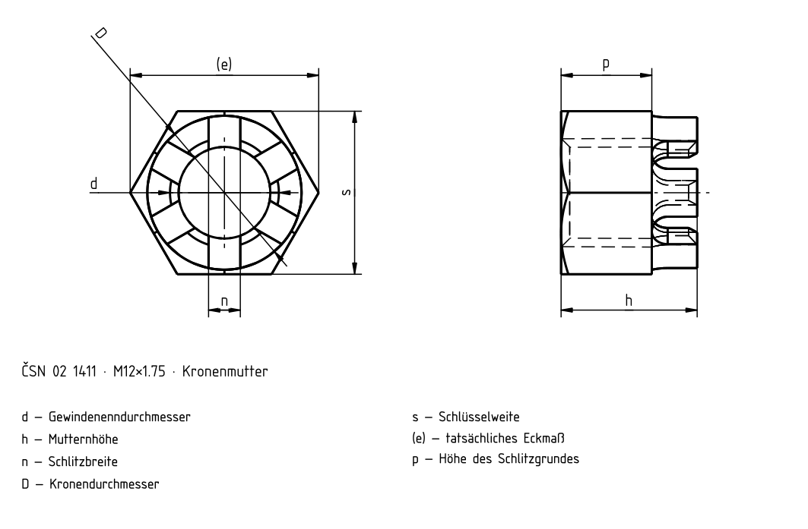

Kronenmuttern
Historische Quelle; Zahlenwerte und Ausnahmen sind nicht vollständig gegen die gültige Norm geprüft.

Kronenmuttern
| d | Feingewinde d | s | e | D 1 | n | h | m | Splint D | Splint l |
|---|---|---|---|---|---|---|---|---|---|
| M4 | M4 | 7 | 8,1 | – | 1,2 | 3,2 | 5,0 | 1,0 | 10 |
| M5 | M5 | 8 | 9,2 | – | 1,4 | 4,0 | 6,0 | 1,2 | 12 |
| M6 | M6 | 10 | 12 | – | 2,0 | 5,0 | 7,5 | 1,6 | 14 |
| M8 | M8×1 | 13 | 15 | – | 2,5 | 6,5 | 9,5 | 2,0 | 18 |
| M10 | M10×1,25 | 16 | 18,5 | – | 2,8 | 8 | 12 | 2,5 | 22 |
| M12 | M12×1,25 | 18 | 20,8 | 17 | 3,5 | 10 | 15 | 3,2 | 25 |
| (M14) | (M14×1,5) | 21 | 24,2 | 19 | 3,5 | 11 | 16 | 3,2 | 28 |
| M16 | M16×1,5 | 24 | 27,7 | 22 | 4,5 | 13 | 19 | 4 | 32 |
| (M18) | (M18×1,5) | 27 | 31,2 | 25 | 4,5 | 15 | 21 | 4 | 36 |
| M20 | M20×1 | 30 | 34,6 | 28 | 4,5 | 16 | 22 | 4 | 40 |
| (M22) | (M22×1,5) | 34 | 39,2 | 30 | 5,5 | 18 | 26 | 5 | 40 |
| M24 | M24×2 | 36 | 41,6 | 34 | 5,5 | 19 | 27 | 5 | 45 |
| (M27) | (M27×2) | 41 | 47,3 | 38 | 5,5 | 22 | 30 | 5 | 50 |
| M30 | M30×2 | 46 | 53,1 | 42 | 7 | 24 | 33 | 6,3 | 56 |
| (M33) | (M33×2) | 50 | 55,8 | 46 | 7 | 26 | 35 | 6,3 | 63 |
| M36×3 | M36×3 | 55 | 61,3 | 50 | 7 | 29 | 38 | 6,3 | 63 |
Kronenmuttern
| d | Feingewinde d | s | e | D 1 | n | h |
|---|---|---|---|---|---|---|
| M4 | M4 | 7 | 8,1 | – | 1,2 | 3,2 |
| M5 | M5 | 8 | 9,2 | – | 1,4 | 4,0 |
| M6 | M6 | 10 | 12 | – | 2,0 | 5,0 |
| M8 | M8×1 | 13 | 15 | – | 2,5 | 6,5 |
| M10 | M10×1,25 | 16 | 18,5 | – | 2,8 | 8 |
| M12 | M12×1,25 | 18 | 20,8 | 17 | 3,5 | 10 |
| (M14) | (M14×1,5) | 21 | 24,2 | 19 | 3,5 | 11 |
| M16 | M16×1,5 | 24 | 27,7 | 22 | 4,5 | 13 |
| (M18) | (M18×1,5) | 27 | 31,2 | 25 | 4,5 | 15 |
| M20 | M20×1 | 30 | 34,6 | 28 | 4,5 | 16 |
| (M22) | (M22×1,5) | 34 | 39,2 | 30 | 5,5 | 18 |
| M24 | M24×2 | 36 | 41,6 | 34 | 5,5 | 19 |
| (M27) | (M27×2) | 41 | 47,3 | 38 | 5,5 | 22 |
| M30 | M30×2 | 46 | 53,1 | 42 | 7 | 24 |
| (M33) | (M33×2) | 50 | 55,8 | 46 | 7 | 26 |
| M36×3 | M36×3 | 55 | 61,3 | 50 | 7 | 29 |
Kronenmuttern
| d | m | Splint D | Splint l |
|---|---|---|---|
| M4 | 5,0 | 1,0 | 10 |
| M5 | 6,0 | 1,2 | 12 |
| M6 | 7,5 | 1,6 | 14 |
| M8 | 9,5 | 2,0 | 18 |
| M10 | 12 | 2,5 | 22 |
| M12 | 15 | 3,2 | 25 |
| (M14) | 16 | 3,2 | 28 |
| M16 | 19 | 4 | 32 |
| (M18) | 21 | 4 | 36 |
| M20 | 22 | 4 | 40 |
| (M22) | 26 | 5 | 40 |
| M24 | 27 | 5 | 45 |
| (M27) | 30 | 5 | 50 |
| M30 | 33 | 6,3 | 56 |
| (M33) | 35 | 6,3 | 63 |
| M36×3 | 38 | 6,3 | 63 |